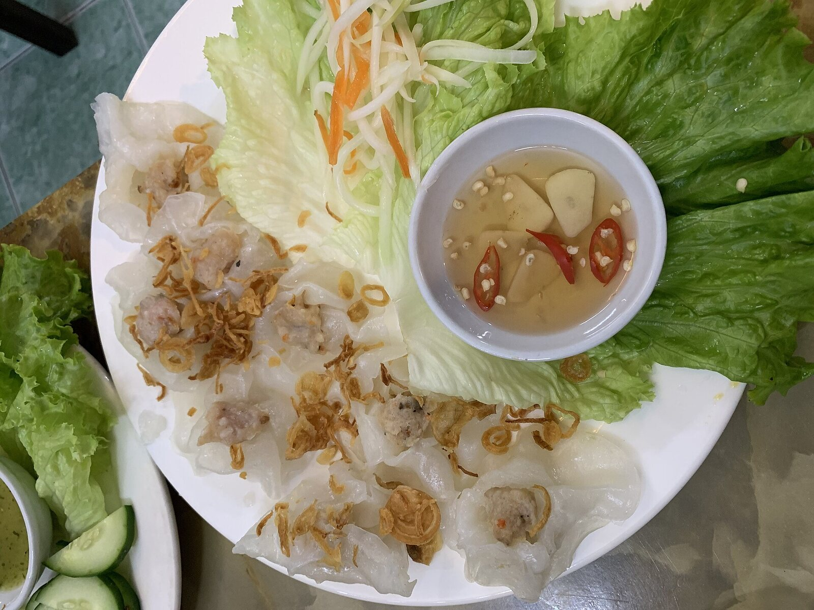
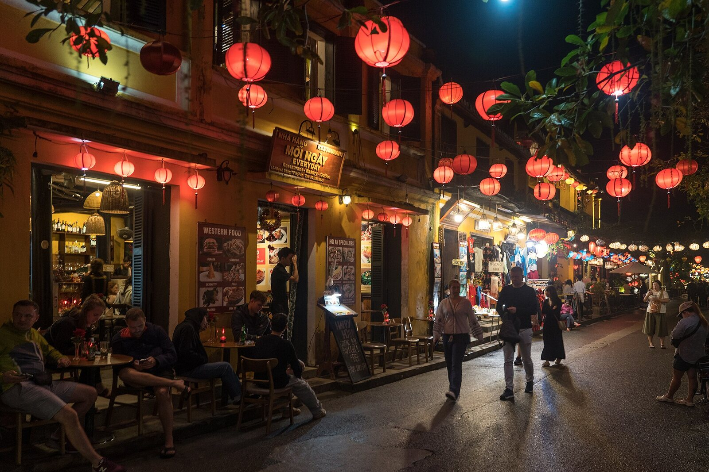

Tiếng Việt
Tiếng Việt English
English 한국어
한국어 中文
中文 Русский
Русский Deutsch
Deutsch
Man sagt, wer einen Ort verstehen will, sollte mit einer Mahlzeit beginnen. Hoi An ist der beste Beweis dafür. Als einst blühender Handelshafen, in dem japanische, chinesische und europäische Kaufleute verkehrten, hat Hoi An in seiner Küche die Spuren eines jahrhundertelangen kulturellen Austauschs bewahrt. Dieser Beitrag stellt zehn Gerichte vor, die Sie probieren sollten, wie man sie auf einheimische Art genießt, und welche kulinarischen Erlebnisse Sie direkt im CGP Luxury Hotel erwarten.
Was macht die Küche Hoi Ans besonders?
Die Küche Hoi Ans ist nicht aufwendig, aber bis ins Detail raffiniert. Drei Dinge prägen ihren Geschmack: lokale Zutaten, kultureller Austausch und die Gewohnheit, frische Kräuter dazu zu essen.
Kräuter aus Tra Que
Die Kräuter aus dem Dorf Tra Que werden mit Lagunenalgen gedüngt und haben ein intensives Aroma und eine besondere Süße. Fast jedes Gericht in Hoi An kommt mit frischen Kräutern.
Kultureller Austausch
Cao-Lau-Nudeln, „Weiße Rosen“ und Wan Tan tragen die Handschrift ausländischer Kaufleute, die einst im alten Hafen lebten.
Familienrezepte
Viele berühmte Lokale hüten über Generationen weitergegebene Rezepte, kochen auf traditionelle Weise und verkaufen nur zu bestimmten Zeiten.
Freundliche Preise
Das meiste Streetfood ist sehr günstig, sodass Sie an einem Tag viele Gerichte probieren können.
10 Gerichte zum Probieren
1. Cao Lau
Wenn Sie in Hoi An nur ein Gericht probieren können, nehmen Sie Cao Lau. Die goldbraunen Nudeln sind bissfest und leicht knusprig und werden traditionell mit Brunnenwasser und Holzasche hergestellt. Eine Schale Cao Lau enthält Nudeln, dünn geschnittenes Char-Siu-Schweinefleisch, knusprige Grieben, blanchierte Sojasprossen, Kräuter aus Tra Que und etwas kräftige Soße. Anders als eine Nudelsuppe hat Cao Lau kaum Brühe: Vor dem Essen wird alles gut vermengt.
 Foto: Chainwit. / Wikimedia Commons, CC BY 4.0
Foto: Chainwit. / Wikimedia Commons, CC BY 4.0 Foto: Christophe95 / Wikimedia Commons, CC BY-SA 4.0
Foto: Christophe95 / Wikimedia Commons, CC BY-SA 4.02. Hühnerreis nach Hoi-An-Art
Der Hühnerreis aus Hoi An unterscheidet sich von anderen Varianten. Der Reis wird in Hühnerbrühe mit Kurkuma gekocht und ist daher golden, locker und duftend. Freilandhuhn wird genau richtig gegart, gezupft und mit Zwiebeln, vietnamesischem Koriander und Gewürzen vermengt. Dazu gibt es eingelegtes Gemüse, eine kleine Brühe und etwas Chilipaste. Das Gericht steht auch auf der Karte des CGP-Restaurants, Sie können es also direkt im Hotel genießen.

3. Mi Quang
Mi Quang ist das Aushängeschild der ganzen Region Quang. Breite, flache Nudeln in Weiß oder Gelb werden mit etwas kräftiger Brühe aus Garnelen, Schweinefleisch, Huhn oder Schlangenkopffisch übergossen. Darauf kommen geröstete Erdnüsse, dazu zerbröselte geröstete Reiscracker und frische Kräuter. Mi Quang wird meist nur mit so viel Brühe serviert, dass die Nudeln sie aufsaugen.
 Foto: Chainwit. / Wikimedia Commons, CC BY 4.0
Foto: Chainwit. / Wikimedia Commons, CC BY 4.0
4. Banh Mi
Das Banh Mi aus Hoi An ist weltberühmt: knusprige Kruste, weiches Inneres und eine üppige Füllung aus Pastete, Aufschnitt, gegrilltem Schweinefleisch, Ei, Kräutern und der Spezialsoße jedes Ladens. Vor manchen Banh-Mi-Läden in der Altstadt stehen ständig lange Schlangen. Probieren Sie es mindestens einmal und fragen Sie ruhig nach der Spezialfüllung.
 Foto: Chainwit. / Wikimedia Commons, CC BY 4.0
Foto: Chainwit. / Wikimedia Commons, CC BY 4.0
5. „Weiße Rosen“
Diese Teigtaschen aus durchscheinendem Reisteig mit Garnelen- oder Schweinefleischfüllung werden zu kleinen Blüten geformt. Sie werden gedämpft, mit knusprig gerösteten Schalotten bestreut und in süß-saure Fischsoße getunkt. Leicht und fein, perfekt für das Mittagessen.

Foto: Chainwit. / Wikimedia Commons, CC BY 4.06. Wan Tan
Wan Tan gibt es in Hoi An in zwei Varianten: in Brühe und frittiert. Die knusprig frittierten Wan Tan werden mit einer süß-sauren Soße aus Garnelen, Schweinefleisch und Gemüse übergossen. Ein sehr beliebter Abendsnack.
7. Banh Xeo und Senfblattröllchen
Banh Xeo aus Zentralvietnam sind kleiner als die aus dem Süden, mit knuspriger Hülle und einer Füllung aus Garnelen, Schweinefleisch und Sojasprossen. Wickeln Sie sie mit frischen Kräutern in Reispapier und tunken Sie sie in eine kräftige Erdnusssoße. Ram Cuon Cai sind kleine Frühlingsrollen in grünen Senfblättern, die in süß-saure Fischsoße getaucht werden.
8. Maispudding aus Cam Nam
Der Mais aus dem Dorf Cam Nam ist süß und klebrig und wird mit cremiger Kokosmilch zu einem süßen Pudding gekocht. Abends am Hoai-Fluss eine kühle Schale Maispudding zu essen, ist ein echtes Hoi-An-Erlebnis.
9. Gerösteter Kalbsbraten Cau Mong
Goldbraun gerösteter Kalbsbraten wird dünn aufgeschnitten und mit frischen Kräutern, grüner Banane und Sternfrucht in Reispapier gerollt, dann in Sardellensoße oder Sojasoße getunkt. Man isst ihn gern bei einem Drink oder mittags mit Freunden.
10. Nuoc Mot und Kräutergetränke
In der Altstadt sehen Sie viele Stände mit Nuoc Mot, einem erfrischenden Kräutergetränk aus Limettenblättern, Zitronengras, Zimt und Früchten. Der ideale Durstlöscher nach stundenlangem Spazieren in der Sonne.
Wo und wann essen?
Die Küche Hoi Ans hat ihren eigenen Tagesrhythmus. Wer weiß, was man wann isst, bekommt die besten Mahlzeiten.
- Früher Morgen
Mi Quang, Banh Mi, Kaffee
Viele Mi-Quang- und Banh-Mi-Läden öffnen früh. Wenn Sie im CGP wohnen, reicht das Hotelfrühstück völlig, aber ein Banh Mi unterwegs auf dem Fahrrad macht ebenfalls Spaß.
- Mittags
Hühnerreis, Cao Lau, „Weiße Rosen“
Jetzt sind die Hühnerreis- und Cao-Lau-Lokale am vollsten. Kommen Sie etwas früher, um Wartezeiten zu vermeiden.
- Nachmittags
Süßspeisen, Nuoc Mot, Kuchen
Der Nachmittag ist Snackzeit: Mais- oder Bohnenpudding, Banh It La Gai oder ein kaltes Glas Nuoc Mot.
- Abends
Nachtmarkt und Lokale am Fluss
Abends reihen sich Imbisswagen am Flussufer und auf dem Nachtmarkt. Probieren Sie gegrilltes Reispapier, frittierte Wan Tan und gegrillte Meeresfrüchte.

Foto: Alexkom000 / Wikimedia Commons, CC BY 4.0Essen im CGP Luxury Hotel
Nach einem Tag voller Streetfood möchte man manchmal einfach gut, sauber und ruhig im Hotel essen. Das CGP Luxury Hotel bietet viele Möglichkeiten, vietnamesische Aromen zu genießen, ohne hinauszugehen.
Schwimmendes Frühstück am Pool
Ein Rattantablett mit Gebäck, frischem Obst und Wassermelonensaft schwimmt direkt auf dem Hotelpool. Das Lieblingserlebnis vieler Paare und eine traumhafte Fotokulisse. Bitte buchen Sie mindestens einen Tag vorher an der Rezeption, damit die Küche alles vorbereiten kann.


Frühstücksbuffet im Restaurant
Das Hotelrestaurant liegt im Erdgeschoss, mit grüner Pflanzendecke, gelben Rattanstühlen und farbenfrohen Ölgemälden. Jeden Morgen gibt es am Buffet Toast, Eier, Würstchen, Aufschnitt, frisches Gemüse, Obst der Saison wie Wassermelone, Drachenfrucht und Mango sowie Orangen- und Wassermelonensaft, Kaffee und Tee. Bitte sagen Sie bei der Buchung oder beim Check-in Bescheid, wenn Sie das Frühstücksbuffet wünschen.
Vietnamesische und westliche Gerichte
Die CGP-Küche serviert vietnamesische und westliche Gerichte am Pool oder im Restaurant: goldenen Hühnerreis nach Hoi-An-Art, eine Platte Reisnudeln mit frischen Kräutern und kräftigem Dip, knusprig frittierte Teigtaschen, ein heißes Baguette mit Spiegelei und Sandwiches mit Pommes für den kleinen Hunger. Die Karte lässt sich an Ihren Geschmack oder Ihre Ernährung anpassen, sagen Sie es uns einfach bei der Bestellung.


Gartencafé
Unter der grünen Pergola am Pool serviert das Gartencafé vietnamesischen Kaffee, Orangen- und Wassermelonensaft, Früchtetee und kleine Snacks. Ein schöner Ort, um nachmittags zu lesen oder mit Freunden zu plaudern.
Tipps für Reisende
Vor dem Bestellen nach dem Preis fragenWo es keine klare Preisliste gibt, fragen Sie zuerst nach dem Preis, um Missverständnisse zu vermeiden. Die meisten Verkäufer in Hoi An sind sehr freundlich und erklären gern.
Vieles probieren, von allem ein wenigStreetfood ist günstig, bestellen Sie also mehrere kleine Gerichte zum Teilen. So probieren Sie auf einer Reise mehr Geschmäcker.
Vorsicht bei AllergienViele Gerichte enthalten Erdnüsse, Garnelen oder Fischsoße. Wenn Sie eine Allergie haben, sagen Sie es dem Verkäufer oder bitten Sie die Hotelrezeption, Ihnen eine Hinweiskarte auf Vietnamesisch zu schreiben.
Sie wissen nicht, wo Sie anfangen sollen? Fragen Sie an der CGP-Rezeption. Unser Team besteht aus Einheimischen, die wissen, wo die Bewohner selbst gern essen, und Ihnen diese Orte gern auf der Karte markieren.
Häufige Fragen
Was ist der Unterschied zwischen Cao Lau und Mi Quang?
Cao Lau hat bissfeste goldbraune Nudeln mit Char-Siu und Grieben und kaum Brühe. Mi Quang hat breite flache Nudeln mit mehr Brühe, dazu Erdnüsse und geröstete Reiscracker.
Gibt es im Hotel vegetarische Gerichte?
Ja. Die CGP-Küche kann Gerichte für Vegetarier oder auf besonderen Wunsch anpassen. Bitte sagen Sie es bei der Bestellung.
Wie früh muss ich das schwimmende Frühstück buchen?
Bitte buchen Sie mindestens einen Tag vorher an der Rezeption.
Sind Mahlzeiten in den Aufenthaltspaketen enthalten?
Alle Pakete beinhalten das tägliche Frühstück. Je nach Paket kommen Abendessen oder Nachmittagstee hinzu, Details finden Sie auf der jeweiligen Paketseite.
Hoi An mit allen Sinnen genießen
Im CGP Luxury Hotel genießen Sie das schwimmende Frühstück am Pool und sind trotzdem nur wenige Radminuten von den besten Lokalen der Altstadt entfernt.